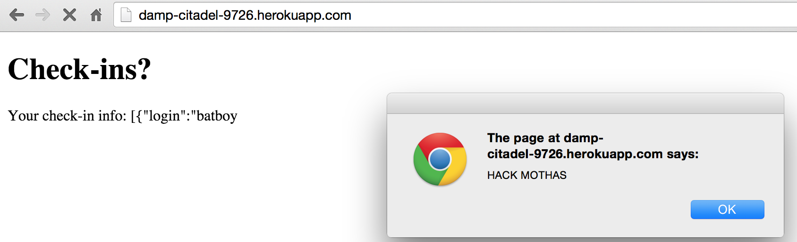

1) Introduction
This assesment tests the security of the whereintheworld web application devloped by @richardzyx for Comp 20 Assignment 4. This assignment was to act as the server for our Marauder's Map assignment, so it would store the lattitude and longitude of users after they sent their lattitude and longitude to the server, and would give you the option to see all of the location checkins for a specific user. But vulnerabilities and security issues exist in the web application that make it not quite ready for public use.
In this report, I have detailed out four of the security issues that I have found in my partner's web application.
2) Methodology
I found all errors that existed in my partner's code by using curl, and by testing his heroku app locally. With these methods I managed to find several issues.
3) Abstract Findings
The issues that I found were as follows: the web application did not try to validate your location, so you could put yourself anywhere else in the world, it also failed to protect the privacy of other users so you could see everyone else's information, certain hacks would also allow the hacker to completely reconfigure the web application, and the database could have easily been overflooded if it was given too much information.
4) Issues Founds
a) Returned Extra Logins (Privacy)
Affects: User Privacy
Location: GET /locations.json
Severity: HIGH. Allows anyone to see the location checkin for all other users, so it's a very large security issue. This was you can see every single person that sent a checkin to the heroku app.
Method: This can be found by going here. Typically, locations.json is supposed to return the checkin history for a certain user, but typing in [$ne] will retrun the checkin information for everyone who isn't that user.
Resolution: This can be resolved by character stripping in the locations.json. If he were to check for "[$ne]" and return an empty object in those instances, the web application wouldn't return the information of the other users.
b) Falsifying Data
Affects: Accuracy of Stored Data
Location: POST /sendLocation
Severity: Medium to high. Can result in users sending you completely false information that is then stored and perceived to be accurate data when it is not.
Method: Can be found by using curl --data with any lattitude and longitude that you so desire.
The above lattitude and longitude states that I was recently at the Eiffel Tower.
Resolution: This issue can be resolved by validating the lattitude and longitude via the IP address, and comparing it to the data that was sent. If the difference is incredibly large, then the information must be false.
c) Cross Site Scripting
Affects: The Web Application itself
Location: PoST /sendLocation
Severity: HIGH. Can result in the users sending in functions that could redirect the client to a different web page, edit the HTML itself, or completely tear apart the heroku app.
Method: I used the javascript alert function so a popup box would load everytime the heroku app was opened.

Resoultion: This issue can be resolved either by character stripping the login (checking for any script tags), or by using regular expressions. Either of these methods would reject the faulty login as an attempt to hack into the web page.
d) Overloading Their MongoDB
Affects: The Web Application itself
Severity: Medium to high. If the database is completely overloaded, the web application could completely crash as a result. Otherwise, it could be completely filled with useless information, even if it does not crash.
Method: I used an infinite loop on the command line, using while true; do; curl --data "login=Complete Garbage&lat=bad&lng=bad" https://damp-citadel-9726.herokuapp.com/sendLocation
Resolution: This issue can be resolved by using collection.limit() function, limiting the amount of possible entries to a sizable value, say 100. This way the document couldn't be overflooded and the application would not crash.
5) Conclusion
Here, we can see some of the problems that exist with my partner's code. Some things to take into consideration for future projects: location validation, privacy of other users, checking for faulty logins, and limiting the size of the mongo database.